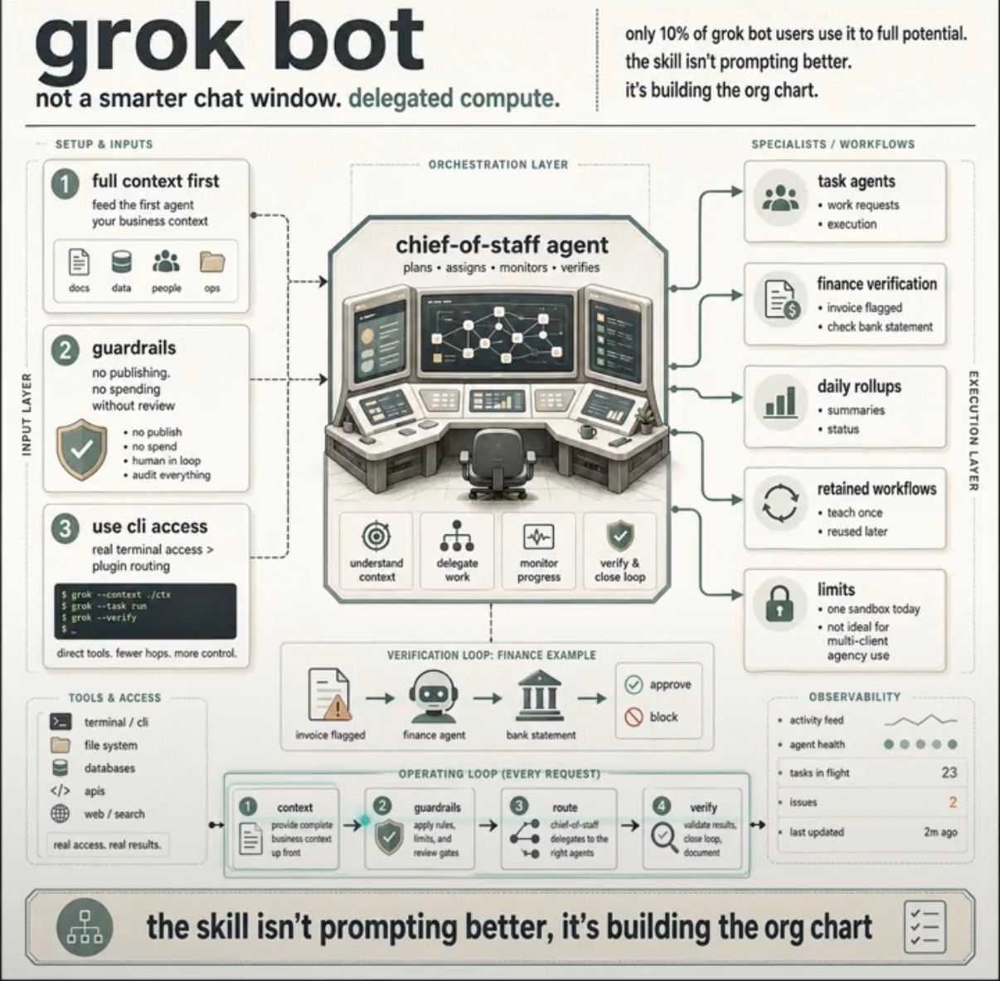
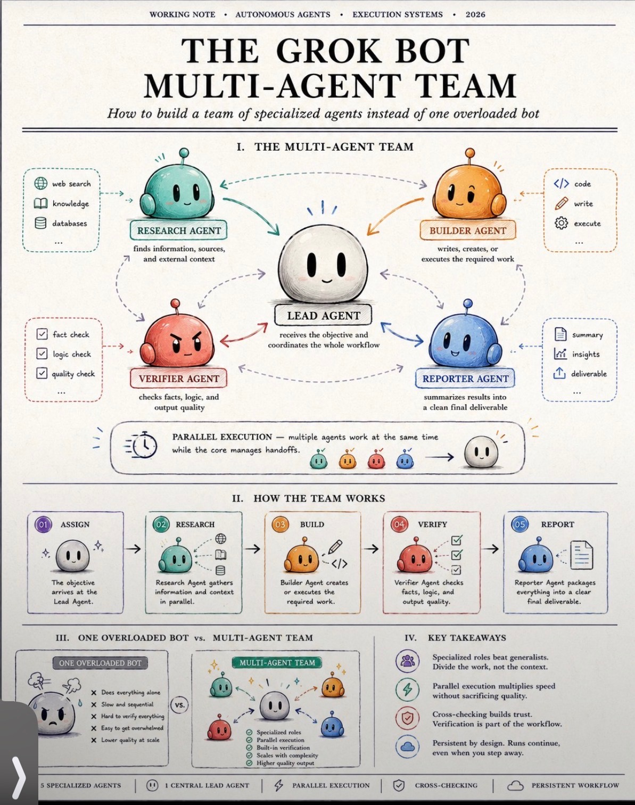
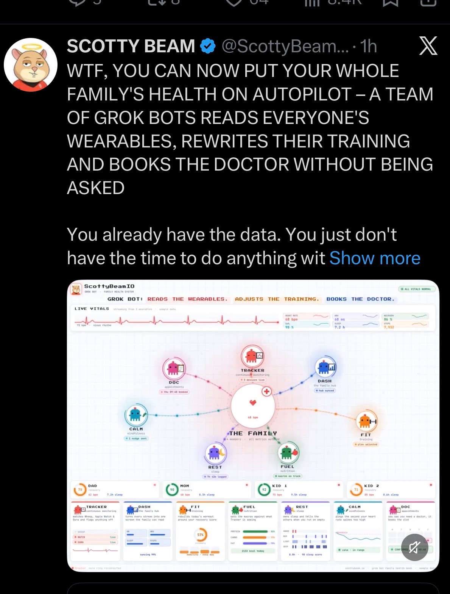

Week 1 kickoff. Teach the company how to work with a crew of agents, not a smarter chat window. Then practice the Tuesday muscle we will keep.
MC is already on the payroll. This meeting is not “get comfortable with AI.” It is: what did we let a specialist own, and what did we keep because the product is character. Stan shows the org chart. You leave with one experiment. Going forward this room is 45 minutes. This week is onboard plus that muscle.
| When | Block | What happens |
|---|---|---|
| 0–10 | The door | Phones out. Same live page. Name, one win (or “none yet, I’m new”), one roadblock, and whether you can show it. This is how you walk in this week. Going forward the form goes out Monday. Everyone · Lindsay opens the URL |
| 10–18 | What this room is | Not standup. Not a tools bazaar. A standing Tuesday where we show work, pick one live problem, and leave with a Friday proof. Productions shadows Week 1. You get the table when you have a thing to show. Lindsay in the chair |
| 18–40 | The org chart | Stan talks over three pictures. Not a smarter chat window. Delegated compute. A lead plus specialists, with guardrails, then verify before it ships. Then the autopilot example: agents that act without being asked. Unbridled line: MC is chief of staff. The skills are the specialists. You are still the character gate. Stan · pictures on the screen |
| 40–55 | Show the work | Only people who marked “I’ll show it” on the door. Ninety seconds. An artifact on screen. Then “what would you steal?” If the form is thin, stay with Stan. Do not fish. Named from the form · Lindsay cuts status |
| 55–72 | One roadblock | Lindsay picks one or two from the door form before this block starts. “I tried X. It broke at Y.” Decision or named experiment. Park the rest on the board for next week. Lindsay picks · room decides |
| 72–85 | This week we try | Every Media person names one experiment. Owner plus Friday proof. Small enough to finish. Productions may take a shadow try. Nobody leaves without a sticky. Every Media person |
| 85–90 | Close | Read the try column out loud. Name next week’s show-and-tell owner. Personality quiz is Friday homework, not today. Phones back. Lindsay · MC is the board, not the keynote |



Live room (put this on the screen before they sit): offers.hotelstcloud.com/assets/mc-roundtable
This agenda is the Week 1 kickoff. Week 2 onward: Monday form, named presenters, 45 minutes. Stan does not repeat the org-chart lecture unless a new cohort sits down.